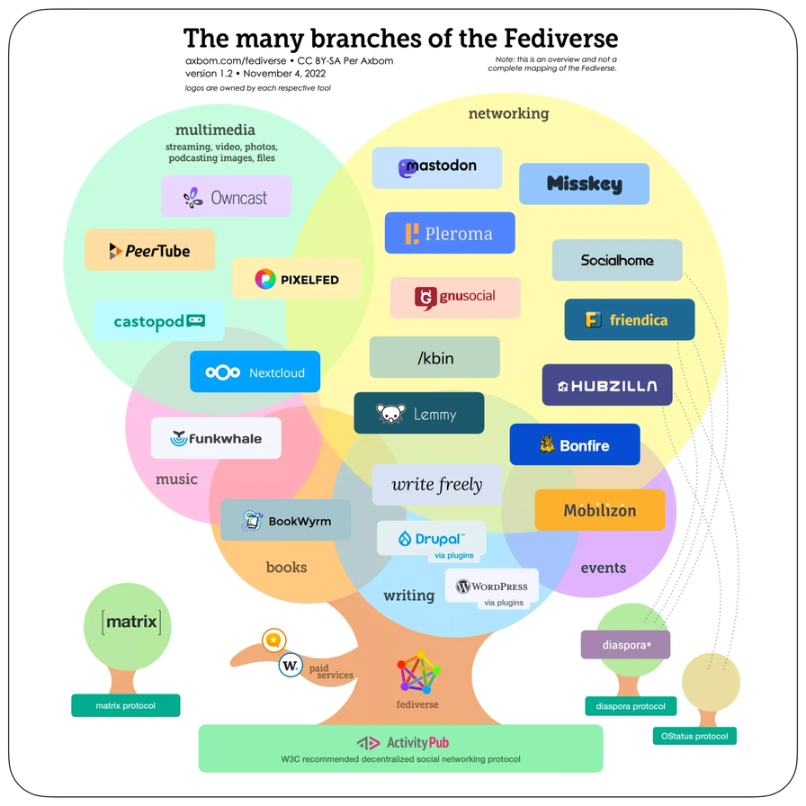
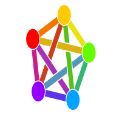

El Fediverso es un nombre común e informal para referirse a una federación descentralizada de servidores, cuyo propósito principal es publicar contenido en la Web.
En cada servidor (instancia o nodo) del Fediverso, podemos encontrar una aplicación distinta, pero a diferencia de las redes sociales comerciales, estas aplicaciones interoperan entre ellas y son de código abierto.
Los usuarios de distintos servidores o instancias, pueden comunicarse entre ellos incluso si utilizan aplicaciones diferentes. Imaginate que desde Twitter ves los que publican tus contactos en Instagram.
Existen muchos otros... Listado de aplicaciones federadas en el Fediverso:

Friendica
friendi.ca
Anteriormente conocido como Mistpark. Para publicar artículos, fotos, eventos...GNU Social
gnu.io/social
Sistema de microblogueo. Hasta el 2013 se llamava StatusNet. Es de las pocas aplicaciones que utilizan MariaDB 10-3+ como base de datos.Mastodon
mastodon.social
Popular aplicación para microblogueo. A la que migran muchos usuarios de Twitter. Esta basada en GNU Social y tiene su APP para móvil OsMac y Android.Pixelfed
pixelfed.org
Vendría a ser como el Instagram. Para compartir fotos e imágenes.Pleroma
pleroma.social
Para publicar en forma de microblogueo. Tienen su propia APP para móvil Android.PeerTube
joinpeertube.org
Publicación de video usando la tecnología WebTorrent y el protocolo ActivityPub con el que consigue conectarse con otros servicios del Fediverso.Diaspora
diasporafoundation.org
Publicación en forma de blog.Sitios web
Los gestores de contenido como Wordpress o Drupal, utilizan el protocolo ActivityPub para integrarse en el Fediverso.
Únete al Fediverso
Si lo que pretendes es utilizar alguna de estas redes, y no dar de alta una nueva instancia, aquí tienes una lista de servidores Peertube joinpeertube.org/instances, Pixelfed fedidb.org/software/pixelfed y Mastodon joinmastodon.org/es/servers. En su mayoría, estos servidores están mantenidos y gestionados por voluntarios o pequeñas organizaciones.
Últimamente han aparecido servidores de organizaciones e instituciones oficiales; como por ejemplo el de la Unión Europea social.network.europa.eu/about
Buscador de servidores en el Fediverso fediverse.observer
También es muy interesante, que cada servidor tenga sus propias normas y/o temas de interés. La idea principal es que toda la red no pertenece a una sola persona o empresa y que el software es de código abierto.
Nuestra dirección en el fediverso: mastodon.social/@hayqueverlo
* Microblogueo: permite a sus usuarios enviar y publicar mensajes breves.
* Blogueo: publicación de artículos en forma de bitácora. Comúnmente los lectores pueden comentar los artículos.
